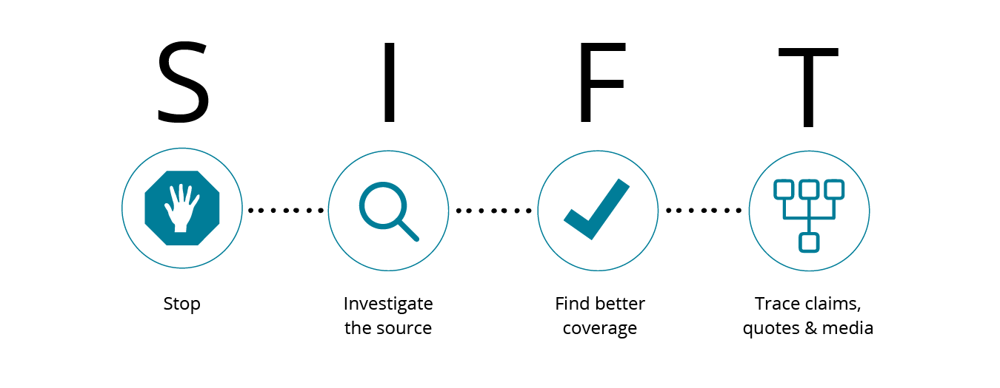
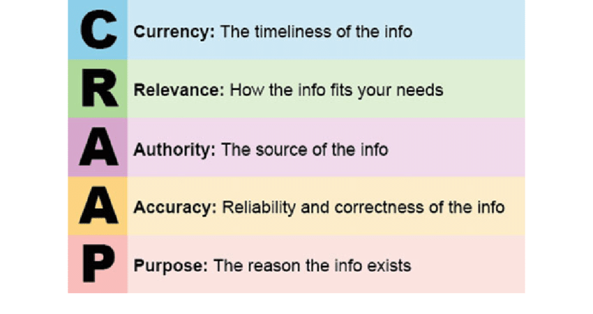

Methods of Detection
Nowdays, companies and governments are making efforts against misinformation. But what can you do to prevent yourself from falling into its trap? Luckily, there are several methods.
Four Moves and a Habit (SIFT)
First proposed by Mike Caulfield, the SIFT method contains four simple steps:
- Stop
- Investigate the Source
- Find Better Coverage
- Trace Back to the Original Source
Before you read, stop and ask yourself if you trust the website or source of information.
Do research on who is providing the information, and how they could be related to the it (ex: video of benefits of milk consumption published by a milk company)
Look through multiple sources about the topic. Consider the general consensus, not just the opinion from a single article.
Trace any video, quote or other media back to it's origin. Perhaps the video have been clipped, or the photo was taken in an entirely different context.
For more details of how to use this method, check out these examples.
The CRAAP Test
The SIFT method is commonly used for everyday purposes, but when it comes to school assignments or more formal settings, the CRAAP Test can be used. Consider the following questions:
- Currency (C)
- Relevance (R)
- Accuracy (A)
- Authority (A)
- Purpose (P)
How recent is the text?
How closely related to your topic is the text? Is it directly related?
How accurate is this text? Is there any reason to doubt it's validity?
Who is the source of this information (author, publisher)? How do their credentials relate to the topic?
What is the text trying to achieve, and does this purpose influence their credibility?
When it comes to global events or news, consider fact-checking websites such as Snopes, FactCheck.org and Politifact. Remember, always think twice before trusting anything online!